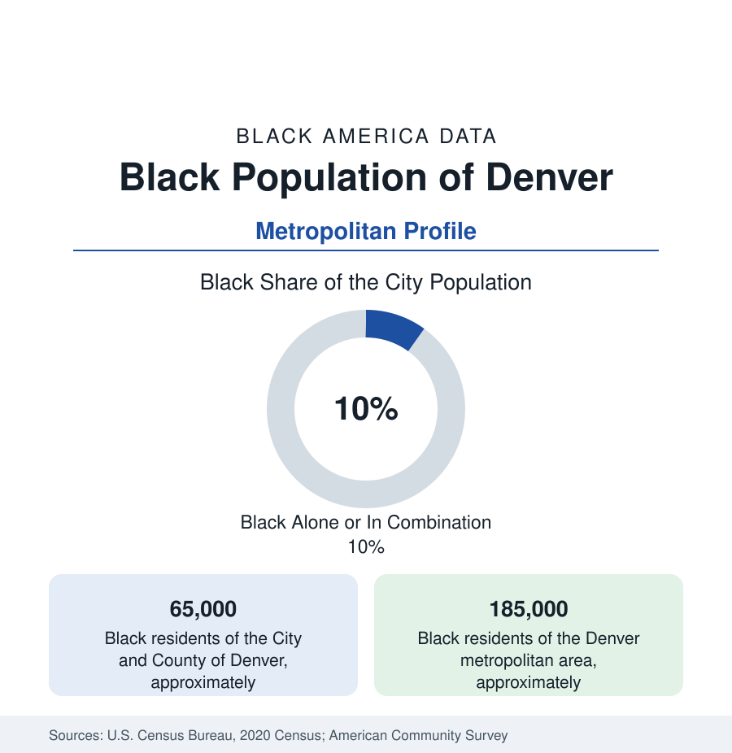

Black Cities
Black Denver: From Five Points to Aurora
Denver holds about 65,000 Black residents in the city and 185,000 across the metro — a community whose center of gravity has shifted to the suburbs. The census profile.

Denver holds about 65,000 Black residents within the city and county — roughly one in ten of its 715,000 people — and about 185,000 across the metropolitan area. Black Denver's story across the last half-century is the story of its center moving: from Five Points, the historic district, eastward through Park Hill and Montbello, and beyond the city line into Aurora, which now holds a Black population rivaling Denver's own. This article profiles the metro population in the census data.
The city's Black share of about 10 percent, it should be said plainly, is the consolidated city-county's figure; the neighborhoods this article describes range from under 2 percent Black on the affluent south side to historic majorities in the northeast districts.
Five Points: The Harlem of the West
Five Points, the neighborhood northeast of downtown named for the five-way intersection at its heart, was Black Denver's center from the early twentieth century — the district where Black families, excluded by covenant from most of the growing city, built their churches, businesses, and one of the West's great jazz scenes. The Rossonian Hotel hosted the era's touring bands; Welton Street's clubs and the district's professional class made Five Points the 'Harlem of the West' of the period literature. The district's modern data are a displacement case study in the western register: the neighborhood's Black share has fallen from an overwhelming majority at mid-century to a minority today, its housing values among the city's most appreciated, its historic fabric under active preservation — while the population it housed moved steadily east and then across the border into Aurora.
The Eastward Path: Park Hill, Montbello, Aurora
The movement followed the city's growth. Park Hill, the grand early suburb east of City Park, integrated in the 1950s and 1960s — its fair-housing fights are a documented chapter of the era — and became the Black professional class's address, a status its North Park Hill census tracts retain. Montbello, the planned far-northeast district built from the 1960s, became the city's largest Black neighborhood of the late century, a homeowner suburb inside the city line. Then the line itself: Aurora, the independent city east of Denver, holds a Black population in the range of 60,000 to 70,000 — roughly a sixth of Colorado's most diverse city — from its older northwest districts to the new subdivisions around Buckley Space Force Base, plus one of the interior West's significant African immigrant communities. Commerce City, Thornton, and the Adams County suburbs add the newest layer.
Economy and Institutions
Black Denver's employment runs through the metro's mix — health care (the Anschutz medical campus in Aurora is among the region's largest employers), the airport (Denver International sits in the far northeast, adjoining the Black districts), logistics, the public sector, the military economy of Buckley, and the tech and professional services of the corridor. Institutions: the University of Denver and CU Denver and the Auraria campus carry Black enrollment; Metropolitan State is the broad-access center; there is no HBCU, and the community's anchor institutions are its churches, its media (the Denver Urban Spectrum publishes for the region), and the Five Points heritage institutions themselves. Black median income in the metro runs above the national Black figure, with homeownership in the familiar two-tier pattern — Park Hill and the Aurora homeowner districts strong, the rental districts exposed to the metro's steep appreciation.
Composition and Change
The estimates show the metro's Black population growing at a moderate western rate — Aurora and the northern suburbs gaining, the historic districts' shares continuing to dilute, the city's overall Black share edging down as total growth outruns it. The Ethiopian and East African communities of Aurora, the growing Nigerian population, and a steady domestic inflow from the Midwest and California layer over the railroad-and-Air-Force base. The gentrification data in the Five Points and Cole tracts are the profile's live file: each census measures how much of the original community the historic center still holds.
Reading the Denver Numbers
Denver's profile teaches the same lesson as Los Angeles's and Seattle's in a smaller register: quote the metro, not the city. Black Denver is a 185,000-person region whose historic address is now a heritage district, whose present tense is an arc from Park Hill through Montbello to Aurora — and whose data, read whole, rank among the strongest of any Black population in the interior West.
More in Black Cities
Black Atlanta: Population, Distribution, and Growth of a Black Metropolis
Metro Atlanta holds more than two million Black residents — roughly one in three, second only to New York. The suburban distribution, migration history, and composition of Black Atlanta in the census data.
Black New York: The Largest Black Population in America
The New York metropolitan area holds about 3.4 million Black residents — more than any metro in the nation — and the city itself about two million. The census profile.
Black Washington: The District and the Metro
The Washington metro holds about 1.6 million Black residents, and the District itself — long a majority-Black city — now records a Black share near 41 percent. The census profile.
Source: U.S. Census Bureau, 2020 Census; American Community Survey; Population Estimates Program.